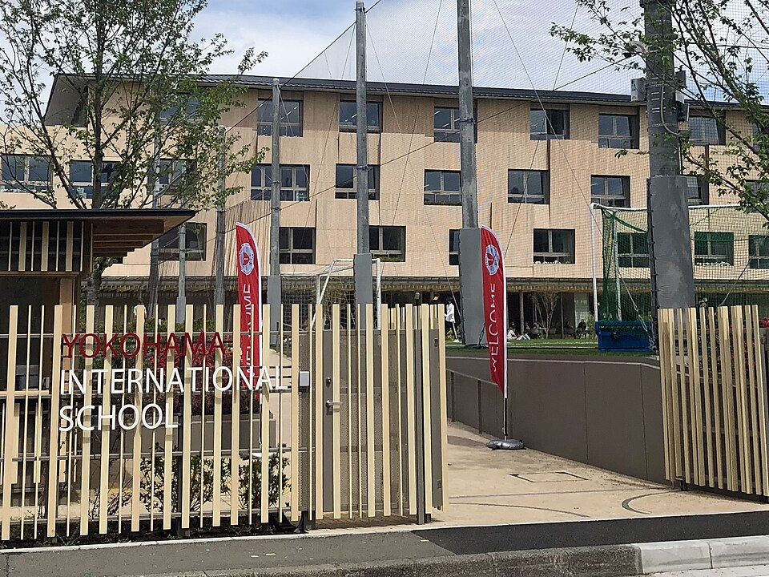

요코하마 인터내셔널 스쿨 새 캠퍼스 입구(2022) · 사진: Aw1805 / Wikimedia Commons, CC BY-SA 4.0
요코하마 인터내셔널 스쿨(Yokohama International School, YIS) — 요코하마 IB 전 과정, DP 과목 선택과 준비법
1. 요코하마 인터내셔널 스쿨은 어떤 학교인가
YIS는 1924년 개교로 알려진, 요코하마에서 역사가 긴 국제학교입니다.
· 교육과정 — IB 전 과정을 운영합니다. 유치~G5는 PYP, G6~G10은 MYP, G11~G12는 DP(디플로마)로 이어지는 구조로 알려져 있습니다.
· 캠퍼스 — 오랫동안 야마테 언덕에 있다가 2022년 혼모쿠의 새 캠퍼스로 옮긴 것으로 알려져 있습니다.
· 언어 — 수업과 평가는 영어.
도쿄의 미국식 학교와 비교하면 차이가 선명합니다.
| 구분 | YIS (요코하마) | ASIJ (도쿄) |
|---|---|---|
| 개교 | 1924년으로 알려짐 | 1902년으로 알려짐 |
| 위치 | 요코하마 혼모쿠(2022년 이전) | 도쿄 조후 |
| 교육과정 | IB 전 과정(PYP·MYP·DP) | 미국식 + AP |
| 고등 평가 방식 | 6과목 + TOK·EE, IA(내부평가) 비중 | 과목별 성적 + AP 시험 |
| 잘 맞는 학생 | 글쓰기·탐구 과제에 강한 학생 | 강한 과목에 집중하려는 학생 |
※ 개설 과목·학년 요건·모집 일정은 해마다 달라질 수 있으니 두 학교 모두 요강을 직접 확인하세요.
2. 한국(주재원) 학생이 겪는 어려움
· MYP에서 DP로 넘어가는 순간. MYP까지는 과제 중심으로 따라가던 학생도, G11 DP에 들어서면 과목마다 HL(심화)·SL(표준)을 골라야 하고 IA·EE(소논문)·TOK가 한꺼번에 몰립니다.
· HL·SL 선택을 성적만 보고 하기. 지금 잘하는 과목으로만 HL을 고르면, 목표 대학·전공이 요구하는 과목과 어긋날 수 있습니다. 한국·일본·영미 대학 중 어디를 볼지에 따라 선택이 달라집니다.
· 영어 = 에세이와 구술 평가. IB 영어(Language A)는 작품 분석 에세이와 구술 발표가 함께 평가됩니다.
· 수학 AA냐 AI냐. 이공계를 생각한다면 Math AA, 통계·사회과학 쪽이면 Math AI가 흔한 선택인데, 이 결정도 G10 무렵에 해야 합니다.
3. 그래서 이렇게 준비합니다
🧭 G9~G10 — DP 과목 설계부터
목표 대학 방향(한국 특례·일본 대학·영미권)을 먼저 적고, 거꾸로 HL 3과목·SL 3과목을 설계합니다. 전공 필수 과목이 HL에 들어가 있는지 확인하는 것이 첫 단계입니다. (→ IB DP 점수 완전정복 · IB 수학 AA·AI 선택)
📖 영어과외 — 분석 에세이·구술
작품을 읽고 작가의 선택(표현·구조)이 어떤 효과를 내는지 분석하는 글쓰기를 연습합니다. 구술 평가는 개요 → 근거 문단 → 연결 문장 순서로 말하는 훈련을 반복하면 안정됩니다. (→ 국제학교 영어 공부법)
📐 수학과외 — AA·AI와 IA
한국식 계산력은 강점이지만, IB 수학은 풀이 과정 서술과 계산기 활용, 그리고 수학 IA(탐구 보고서)에서 점수가 갈립니다. 알지브라·함수 기초를 영어 용어로 다지고, IA 주제 선정과 구조를 미리 잡아 둡니다. (→ 알지브라 공부법)
4. 요코하마의 강점 — 시차 없는 화상과외
일본은 한국과 시차가 없어 방과 후 같은 시간대에 실시간 화상 1:1이 가능합니다. IB는 과제 마감이 일정하게 몰리는 교육과정이라, 아이의 실제 IA·에세이 초안과 시험지를 화면에 띄워 마감 전에 함께 점검하는 방식이 효과적입니다. 도쿄·요코하마의 다른 국제학교는 도쿄 국제학교 과외에, 일본 대학 진학은 일본 JLPT·EJU 준비에 정리했습니다.
정리
요코하마 인터내셔널 스쿨(YIS)은 1924년 개교로 알려진 요코하마의 IB 전 과정 학교로, 2022년 혼모쿠 새 캠퍼스로 옮겼습니다. ① G9~G10에 DP 과목(HL·SL) 설계 ② 영어는 분석 에세이·구술 ③ 수학은 AA·AI 선택과 IA — 이 셋을 시차 없는 화상과외로 마감에 맞춰 관리하는 것이 핵심입니다. 30분 무료 상담으로 우리 아이 단계부터 점검해 보세요.